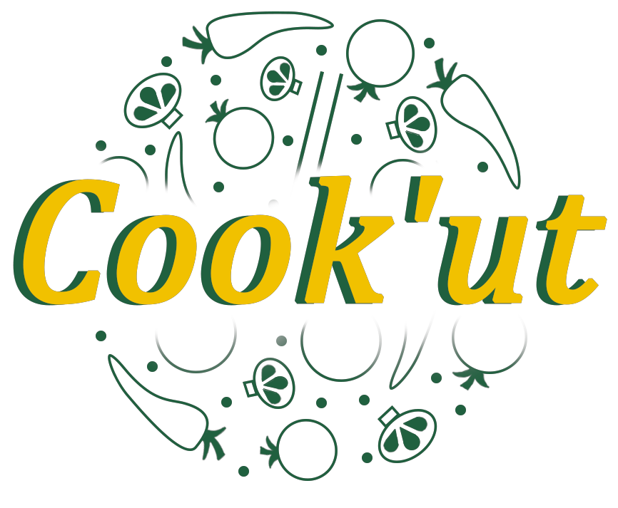

<!-- Navigation -->
<nav class="navbar navbar-expand-lg navbar-light bg-light fixed-top">
    <div class="container-fluid">
        <a class="navbar-brand" [routerLink]="'header'">
          
        </a>
      </div>
    <div class="container">
      <a class="navbar-brand" [routerLink]="'/header'">Cook'UT</a>
      <button class="navbar-toggler" type="button" data-bs-toggle="collapse" data-bs-target="#navbarResponsive" aria-controls="navbarResponsive" aria-expanded="false" aria-label="Toggle navigation">
        <span class="navbar-toggler-icon"></span>
      </button>
      <div class="collapse navbar-collapse" id="navbarResponsive">
        <ul class="navbar-nav ms-auto">
          <li class="nav-item active">
            <a class="nav-link" [routerLink]="''">Home</a>
          </li>
          <li class="nav-item">
            <a class="nav-link" [routerLink]="'/find_services'">Trouver un service</a>
          </li>
          <li class="nav-item">
            <a class="nav-link" href="#">un truc</a>
          </li>
          <li class="nav-item">
            <a class="nav-link" [routerLink]="'/connection'">Connectez-vous</a>
          </li>
        </ul>
      </div>
    </div>
  </nav>